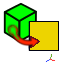
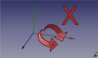
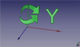
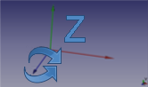

Descrizione
Questa macro serve per ruotare lo schermo di un determinato angolo lungo l'asse voluto e per creare un piano frontale allo schermo in cui produrre una forma in una specifica posizione del piano della faccia selezionata rivolta verso lo schermo, inoltre serve per rilevare la posizione della fotocamera, per allineare la vista alla faccia o all'asse e per allineare l'oggetto alla vista.
Utilizzo
Il suo uso è semplice
Camera of Axis: La finestra di dialogo per immettere il valore dell'angolo di rotazione in gradi.
Angle rotation Axis in degrees: Serve per immettere il valore dell'angolo di rotazione in gradi.
Axe of rotation: Serve per selezionare l'asse di rotazione X, Y o Z.
- Accept the rotation : Serve per confermare i valori inseriti
Virtual
- Detect camera orientation : Rileva l'orientamento della fotocamera e lo stampa nella vista Report. Il valore restituito è il valore fornito dalla funzione getCameraOrientation().
Align view to face selected
- To Face. : Allinea la vista alla faccia selezionata. Fare clic e ripetere il clic per NormalAt : "(0,0,1) (0,0,-1) (0,1,0) (0,-1,0) (1,0,0) (-1,0,0)"
- To Axis. : Allinea la vista della faccia selezionata agli Assi. Fare clic e ripetere il clic per Surface Axis : "(0,0,1) (0,0,-1) (0,1,0) (0,-1,0) (1,0,0) (-1,0,0)"
- Align object to view. : Allinea l'oggetto selezionato alla vista attiva. Modifica i valori di : Rotation Axis((X, Y, Z), Angle) come angoli di Eulero : Yaw, Pitch, Roll. Translation non viene modificata.
- Create plane of view. : crea un piano circolare frontale allo schermo con le coordinate del punto cliccato con il mouse su un oggetto. Il raggio del piano è uguale alla dimensione massima di boundbox. Se non è selezionato alcun oggetto, il piano viene creato nel punto 0, 0, 0 con un raggio di 20 mm. Il raggio è modificabile nella riga 515:
rayon = 20 # Radius of plane
- Reset. : Ripristina tutti i valori.
- Quit. : Esce da FCCamera.
Sezione Photo
- ComboBox Actual : scegliere la propria definizione dello schermo per il formato dell'immagine
- Available (pre-definito):
- "Actual" (definizione attuale dello schermo)
- "Icon 16 x 16"
- "Icon 32 x 32"
- "Icon 64 x 64"
- "Icon 128 x 128"
- "CGA 320 x 200"
- "QVGA 320 x 240"
- "VGA 640 x 480"
- "SVGA 800 x 600"
- "XGA 1024 x 768"
- "XGA+ 1152 x 864"
- "SXGA 1280 x 1024"
- "SXGA+ 1400 x 1050"
- "UXGA 1600 x 1200"
- "QXGA 2048 x 1536"
- "Free"
- ComboBox Format image
- Available :
- "BMP *.bmp"
- "ICO *.ico"
- "JPEG *.jpeg"
- "JPG *.jpg"
- "PNG *.png" (by default)
- "PPM *.ppm"
- "TIF *.tif"
- "TIFF *.tiff"
- "XBM *.xbm"
- "XPM *.xpm"
- Line 2 : La definizione di schermo utilizzata
- Immagine di sfondo :
- Actual : salva l'immagine con il colore dello schermo effettivo
- White : salva l'immagine con il colore dello schermo bianco
- Black : salva l'immagine con il colore dello schermo nero
- Launch : Apre la finestra del file, indica il nome e il percorso
- Reset : Reimposta il valore predefinito
- Return : Esce dal pannello foto e torna al pannello di FCCamera
Icone
Scaricare le immagini e copiarle nel repertorio delle macro.
Cliccare sull'immagine con il tasto destro del mouse e salvarle nella nuova posizione selezionando "Salva oggetto con nome ..."
Il percorso delle icone viene visualizzato nella Vista report
ex: Path locality to FCCamera.....images.png [ C:\Users\xx\AppData\Roaming\FreeCAD\ ]
È possibile modificare il percorso modificando la riga 165
Icone del programma:
How copy the icons in your macros directory.

Icone del pannello:



Link
Link delle macro collegate a FCCamera
Macro Rotate View, Macro Align Object to View, Macro Align Face Object to View, Macro WorkFeatures
La discussione nel forum MACRO:Work Feature 2014_12
Script
Scaricare la macro da Gist Macro FCCamera.FCMacro
Esempi
Come creare un foro inclinato
Creare un cilindro e posizionarlo
Scegliere l'asse, assegnare l'angolo di inclinazione, ad es. 15°, e poi cliccare su Accept the rotation
Selezionare il cilindro da usare per creare il foro
In FCCamera cliccare su Align Object to View
Il cilindro si inclina di 15° (assume la posizione della camera).
Poi eseguire l'operazione booleana.
Ecco il foro inclinato di 15°.
Si può ottenere lo stesso risultato posizionando uno schizzo su un piano inclinato
Esempio di posizionamento della molla in asse con la faccia
Versione
- ver 07 (03/01/2018): aggiunto pannello foto e rotazione sull'asse selezionato (polilinea, bordo, linea)
- ver 0.6 (13/12/2016): nuovo sistema per verificare il percorso delle macro direttamente nelle preferenze
#path = FreeCAD.ConfigGet("AppHomePath")
#path = FreeCAD.ConfigGet("UserAppData")
#path = "your path"
param = FreeCAD.ParamGet("User parameter:BaseApp/Preferences/Macro")# macro path
path = param.GetString("MacroPath","") + "/" # macro path
path = path.replace("\\","/")
App.Console.PrintMessage("Path locality to FCCamera.....images.png [ " + path + " ]"+"\n")
- ver 0.5 06/09/2016: correct name "FCCamera_Axis_rotation_X.png" in reset block
- ver 0.4 28/02/2016 : add display all camera detection and the Direction
- ver 0.3 18/03/2015 : modify line 492 replace "pl.Base = App.Vector(0,0,0)" to "pl.Base = sel[0].Placement.Base" now no longer moves the form at point (0,0,0) and leaves has the coordinates
- ver 0.2 25/02/2015 : correct names files in for compatibility Linux (case sensitive) thanks microelly2
{kind=link}
{kind=link}
{kind=link}
{kind=link}
{kind=link}
{kind=link}
{kind=link}
{kind=link}
{kind=link}
{kind=link}
{kind=link}
{kind=link}
{kind=link}
{kind=link}
{kind=link}
{kind=link}
{kind=link}
{kind=link}
{kind=link}
{kind=link}
{kind=link}
{kind=link}
{kind=link}